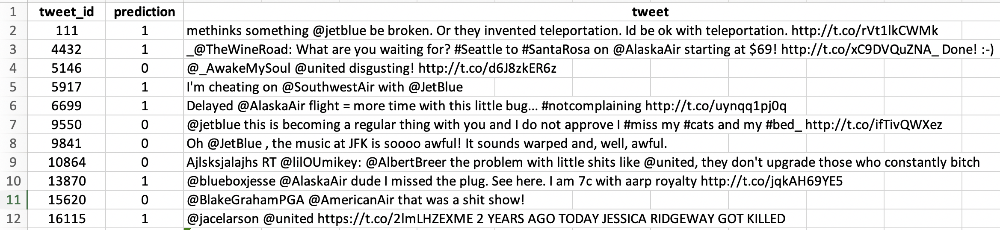

Master's Practicum

For the practicum project that marks my final milestone of my studies at Simon, I worked for a Rochester local healthcare company, Catholic Family Center (CFC), in a team of 6 people coming from 3 different countries. It was really awesome to make prograss together while having fantastic cross-cultural communications!
CFC explicitly expressed their interest in knowing factors most likely to cause patients to come back after finishing their current program. Based on a clear understanding of our client's need, we quickly broke down our project mission into 3 stages: descriptive analysis, causal analysis, and descriptive analysis again. Throughout our 3-month project, we cleaned data, visualized patient information, reduced dimensionality, selected features and conducted logistic regression modeling, aiming to identify the most significant factors influencing patient trajectory. Last, we visualized how these factors impacted patients in Tableau and reported it to our client by PowerPoint in a 30-minute presentation. Click 'more' if you want to learn more abou what we did!
Machine Learning: Decision Support System

This is my first hands-on experience with machine learning & predictive analysis. With the credit data provided by CIS432 Professor Yaron, we built pipelines to clean data by processing missing values, consolidating features, and converting categorical variales into dummies. Then we trained various machine learning models that are hyperparameter tuned by the GridSearchCV function. Notably, as requested by the professor, we self-learned to design an interface system where users could type in feature values and get the predicted credit level automatically. This gave our model a much higher level of applicability!
Pricing Case Competition

In February 2020, me and my wonderful teammates took part in the Pricing Case Competition held by Simon Pricing Club and won the second place in the final round. This was a real business practice where we worked together for a week to propose pricing strategies for a real company to price for its newly acquired subsidiary. We used data visualization to identify service sections with under-pricing issues and conducted break-even analysis to analyze the feasibility of potential pricing initiatives. Noticeably, we also detected sections with abnormally high prices and segmented customers, suggesting our client to deal with these services and customers with more discretion. Eventually, we impressed the judges with simple but effective strategies, valuable insights identified through the huge database, and professional presentation skills. Go check it out by clicking 'more'!
Natural Language Processing
In the busy winter around the end of 2019, I finished my Social Media Analytics final project. In order to predict tweet sentiment towards airlines, I vectorized each tweet into 'bag of words' and used TFIDF to add weight to and reflect word importance. After the natural English language was converted to categorical variables, it became easy to use machine learning models to train and fit the data and make predictions on the test data. It was highly intriguing to quantify words from people's mouth, like reading their subconsciousness. Part of my prediction out put is as below:
